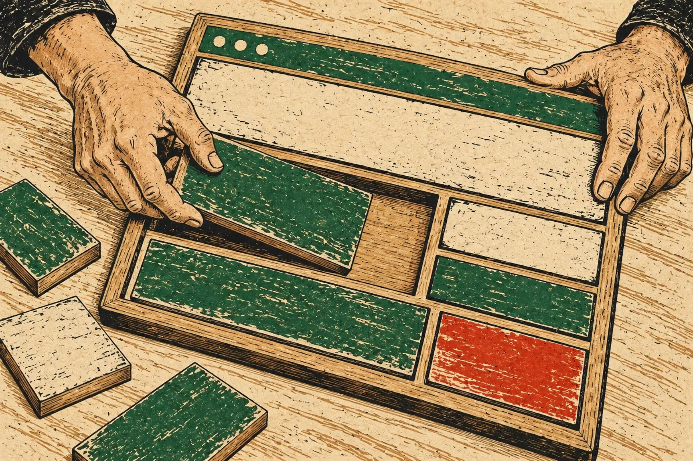

En Kigo, los proyectos web parten de US$1,500. Revisa cómo el contenido existente, las integraciones, la migración y el lanzamiento cambian el costo.

En Kigo, los proyectos web parten de US$1,500. Ese es nuestro presupuesto mínimo de proyecto. En un rediseño, el precio final depende de qué podemos conservar, qué necesita reemplazarse y qué debe seguir funcionando cuando se publique el nuevo sitio.
Tu sitio actual es el punto de partida. Tal vez ya tiene páginas de servicios útiles, artículos que la gente encuentra en buscadores y formularios conectados a las herramientas de tu equipo. Cada parte necesita una decisión antes de estimar el trabajo.
Nuestra calculadora de costo web te da un presupuesto inicial para construir el sitio. La migración, la revisión del contenido y la entrega de tu sitio actual necesitan una revisión aparte.
Si estás planeando tu primer sitio, la guía sobre cuánto cuesta el diseño web profesional explica esa decisión de compra. Aquí vamos a revisar el trabajo necesario para reemplazar un sitio existente.
Decide cuánto necesitas cambiar
Abre tu sitio y escribe los problemas que quieres resolver. Sé concreto: “Falta nuestro nuevo servicio” o “Las cotizaciones llegan a la persona equivocada” nos da algo útil que investigar.
Una actualización puntual puede bastar si la estructura de las páginas y las herramientas de edición todavía funcionan. Podrías actualizar los textos, cambiar las fotos o mejorar una interacción específica.
Un rediseño más amplio cobra sentido cuando la estructura, el contenido y las funciones necesitan cambiar juntos. Reemplazar la plataforma agrega decisiones sobre el contenido, la edición y las conexiones con otros sistemas.
Yo pediría una recomendación sobre qué reutilizar antes de aprobar una reconstrucción. Conservar un componente también requiere comprobar que funciona con los cambios propuestos. La propuesta debe explicar qué partes se revisaron y cuáles necesitan más investigación.
Haz un inventario del sitio actual
Empieza con una lista de las páginas actuales y qué debería pasar con cada una:
| Decisión | Qué debe contemplar el proyecto |
|---|---|
| Conservar | Revisar el contenido y llevarlo al nuevo diseño |
| Reescribir | Asignar a alguien para actualizar y aprobar el material |
| Combinar | Decidir dónde corresponde la información útil |
| Eliminar | Revisar si los visitantes u otras páginas todavía dependen de ella |
| Agregar | Definir el contenido, el diseño y el propósito nuevos |
Incluye artículos, páginas de campañas, documentos descargables y versiones por idioma. Una página que no aparece en el menú principal puede seguir recibiendo visitas.
Después enumera las funciones: formularios, reservaciones, pagos, calculadoras y acceso de clientes. Anota adónde va la información después. Una solicitud podría enviar un correo, crear un registro en el CRM y avisar a otra persona. Esas conexiones necesitan su propia revisión.
Comparte las plataformas y los proveedores involucrados, y confirma quién puede dar acceso. Descubrir a mitad del desarrollo que nadie puede exportar el contenido anterior genera trabajo que debía haberse considerado antes.
Cotiza por separado el traslado del contenido
El contenido existente te da un punto de partida. Trasladarlo puede requerir corregir formatos, asociar imágenes con páginas, revisar descargas y cargar información en un administrador de contenido diferente.
Pregunta si el traslado será automático, manual o una combinación. Una migración de prueba con parte del contenido puede mostrar qué necesita corregirse antes de incluir todo el archivo en la estimación.
En un sitio bilingüe, decide qué páginas tienen traducciones equivalentes y cuáles pertenecen a un solo idioma. Contempla revisar ambas versiones, incluida la navegación y los mensajes de confirmación. Asigna a alguien para aprobar cualquier texto reescrito antes de trasladarlo.
Conserva las direcciones útiles de las páginas cuando sea posible. La guía de Google para cambios de sitio recomienda mapear las URLs que cambian y usar redirecciones. Incluye ese trabajo en la cotización.
Revisa las funciones detrás del diseño
Para el sitio bilingüe de Grupo Domo, construimos páginas de servicios e industrias, un proceso guiado de cotización de embarques y una calculadora de carga. La calculadora convierte las dimensiones de los bultos en volumen y peso volumétrico.
Estas funciones muestran por qué una lista de páginas necesita más detalle. Una cotización tiene pasos, validaciones y un destino para la solicitud. Una calculadora tiene reglas y resultados que deben revisarse tanto en celular como en computadora.
Si vas a rediseñar un sitio con funciones como estas, decide si cada una se conserva, se reconstruye o se reemplaza con una herramienta existente. Explica qué hace hoy antes de agregar funciones nuevas a la lista. Eso le da al equipo una base más clara para estimar el cambio.
Incluye el trabajo alrededor del lanzamiento
Acuerden cómo seguirá disponible el sitio actual mientras se construye y revisa su reemplazo. Una versión de prueba permite que tu equipo revise las páginas nuevas antes de que las vean los visitantes.
También necesitas un plan para los cambios que se hagan al sitio anterior durante el proyecto. Si alguien actualiza la descripción de un servicio después de copiar el contenido, decidan cómo llegará esa actualización a la nueva versión.
Antes de publicar, revisa los recorridos importantes de principio a fin. Envía una solicitud y confirma que llegue a la persona correcta. Prueba las reservaciones o los pagos si están incluidos. Revisa los datos de contacto y los enlaces de tus campañas.
Define quién aprueba el cambio y quién atiende los problemas después. Pregunta qué sucederá si una función esencial falla durante el lanzamiento. Preparar esa respuesta lleva trabajo y debe estar dentro del alcance.
Usa etapas cuando el proyecto completo no cabe
Podrías empezar con las páginas principales de servicios y el proceso de contacto, y reconstruir una biblioteca de recursos más adelante. Escribe qué partes siguen en el sistema actual y cómo pasan los visitantes de unas a otras.
Trabajar por etapas puede repartir el esfuerzo, pero mantener dos sistemas o volver a revisar diseños compartidos también genera trabajo. Pide al equipo que explique esas implicaciones antes de asumir que varios lanzamientos pequeños costarán menos.
El ejemplo de calendario para un rediseño web muestra cómo se relacionan el contenido, las aprobaciones, el desarrollo y las pruebas. Úsalo para hablar de las tareas que dependen de otras y de la disponibilidad de tu equipo.
Compara cotizaciones con las mismas decisiones
Pide que cada proveedor deje claros estos puntos:
- Qué se conserva, qué cambia y qué necesita más investigación.
- Qué contenido y versiones por idioma se trasladan, y quién los prepara.
- Qué funciones y conexiones se conservarán o reconstruirán.
- Qué incluyen las pruebas de lanzamiento, los cambios de URLs y las correcciones posteriores.
- Qué servicios actuales continúan, cuáles terminan y si se superponen suscripciones.
Aclara cómo se aprueba el trabajo adicional si la revisión descubre algo inesperado. Una cotización útil explica esos supuestos con suficiente claridad para poder discutirlos.
Comparte la URL actual, los problemas que quieres resolver y las herramientas conectadas al sitio mediante nuestro formulario de proyectos de diseño web. Incluye cualquier fecha límite o restricción de presupuesto para que podamos hablar de un alcance práctico para el rediseño.